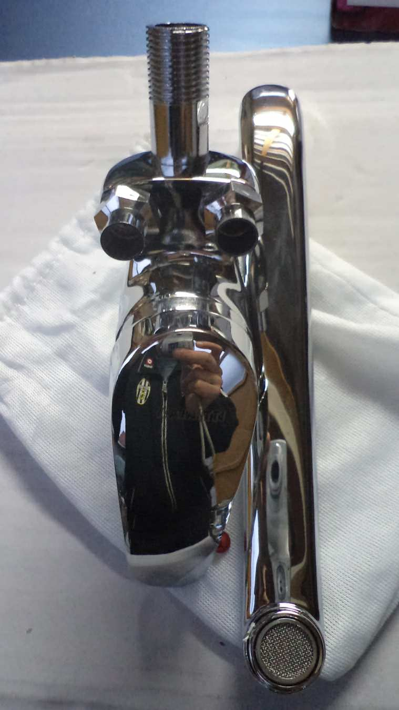

Welcome to baterija
BATERIJA - APIE FESTIVALĮ
2020.10.30 05:06
BATERIJA APIE FESTIVALĮ NAUJIENOS BATERIJOS 2018 PARAKAS III FORTAS / ŽIEMOS SODAS III FORTAS / ATMINTIES POTERNOS III FORTAS / BATERHIA CENTRINIAI / MENO SANDĖLIS / EKSKURSIJOS LINKUVOS ĮTVIRTINIMAI / PIRAMIDĖ / BALTOJI TRISPALVĖ Kontaktai EN tarpsritinis kultūros paveldo festivalis
Kauno tvirtovėje
Įkrauk 2019
Kviečiame tapti festivalio rėmėjais ir partneriais, kūrybinės komandos dalimi!Kauno tvirtovės schemoje - baterija. Akumuliuojanti kultūros paveldo erdvė. Telkianti valią kurti, dalintis ir atrasti. Naujas interpretacijas ir galimybes. Įkrauk!
siūlyk idėją! Tarpsritinis kultūros paveldo festivalis "Baterija" Kauno tvirtovėje
2018 metais
Apjungė keturias skirtingas Kauno tvirtovės lokacijas, kurios festivalio metu tapo BATERIJOMIS
Atrask Kauno tvirtovę! tvirtovės žemėlapis Pagrindinis festivalio organizatorius: VŠĮ Kauno tvirtovės parkas
Festivalis - tai forma, padedanti pristatyti tvarkybos darbus Kauno tvirtovėje, skatinanti atrasti ir kultūriškai aktyvuoti paveldą - atverti unikalias erdves ir populiarinti KAUNO TVIRTOVĖS vardą ir išskirtinę miesto-tvirtovės reikšmę.
Išsaugoti įveiklinant!
atfort.kaunas.lt
''Šio festivalio objektas – Kauno tvirtovė, kaip kultūros paveldas. Vieta, erdvė, atmintis. Mes atveriame tvirtovės požemius kūrybai, susitikimui, dalinimuisi.
Taip mezgasi dialogai tarp skirtingų formų, reiškinių, patirties. Erdvė atsiveria lankymui ir tampa potenciali – talpa, kurioje stengiamės sutalpinti pačias įvairiausias idėjas. Juk svarbiausia, jog šis paveldas tampa regimas, matomas, lankomas ir pažįstamas. Mums svarbu atvesti bendruomenę, miesto svečius į unikalų miesto palikimą, telkti pozityvią energiją ir atradimo nuostabas. Festivalis neatstovauja, kurios nors meno srities (pvz. tai nėra ir tarpdisciplininio meno festivalis, kaip dažnai buvo painiojama). Mums svarbu, jog tvirtovė tampa skirtingų sričių susidūrimo vieta, toks kūrybiškas susipriešinimas kuria naujas patirtis, paskatina ir įkvepia jaunus kūrėjus, savanorius tvarkyti, rėmėjus remti kultūrines iniciatyvas unikalios paveldo erdvėse.''
- VŠĮ Kauno tvirtovės parko
Projektų vadovas ir festivalio kuratorius
Egidijus Bagdonas
komanda, partneriai ir rėmėjai
Tarptautiniai partneriai - EFFORTS (Europos tvirtovių ir įtvirtintų miestų tinklas)www.efforts-europe.com Kūrybinė komanda
Kauno tvirtovės parko projektų vadovas, festivalio kuratorius Egidijus Bagdonas (egbagd@gmail.com);
Vida Bliumkienė (Parakas), Aistė Plavinskaitė (viešinimas); Ovidijus Jurkša (III fortas), Algirdas Šapoka (BATERHIA), Artūras Novikovas (BATERHIA), Evelina Šimkutė (Linkuvos įtvirtinimai) ir kt.
https://silainiaiproject.com/ asociacija "Kauno tvirtovė"
Kūrybinė komanda:
Šančių įgula, Kauno tvirtovės III-ojo forto įgula, VIII-ojo forto ir Linkuvos įtvirtinimų įgula, bei kiti asociacijos nariai
www.kauno-tvirtove.lt www.ghia.lt Projektas dalinai finansuotas Lietuvos kultūros tarybos prie Kultūros ministerijos
Powered by Create your own unique website with customizable templates. Get Started APIE FESTIVALĮ NAUJIENOS BATERIJOS 2018 PARAKAS III FORTAS / ŽIEMOS SODAS III FORTAS / ATMINTIES POTERNOS III FORTAS / BATERHIA CENTRINIAI / MENO SANDĖLIS / EKSKURSIJOS LINKUVOS ĮTVIRTINIMAI / PIRAMIDĖ / BALTOJI TRISPALVĖ Kontaktai EN
